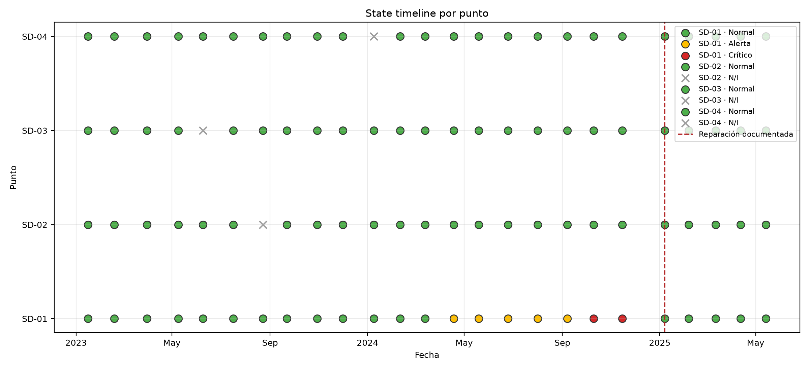
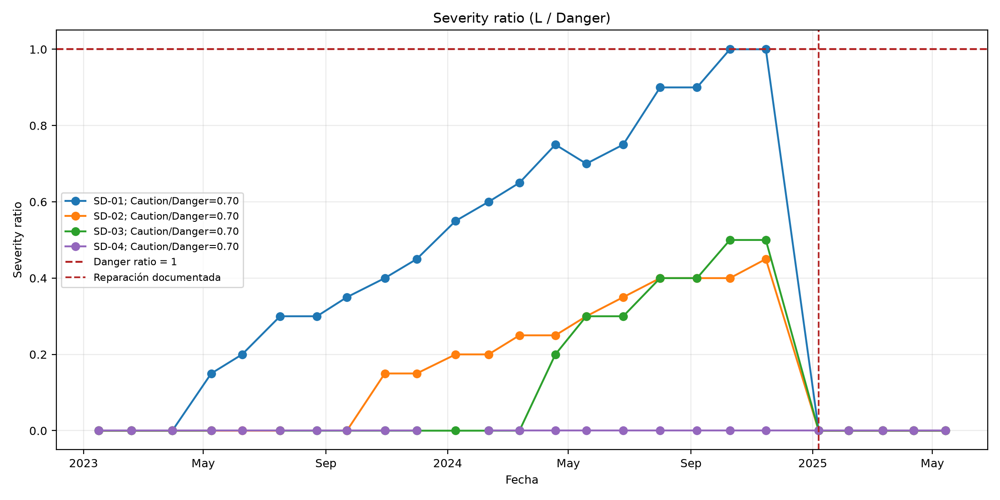
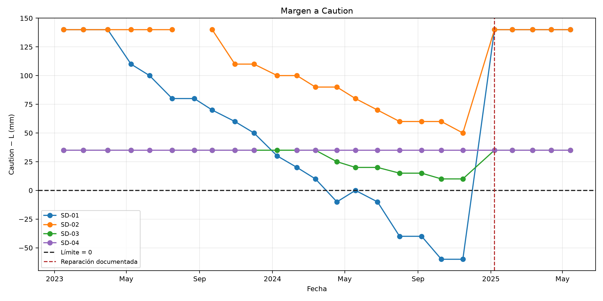
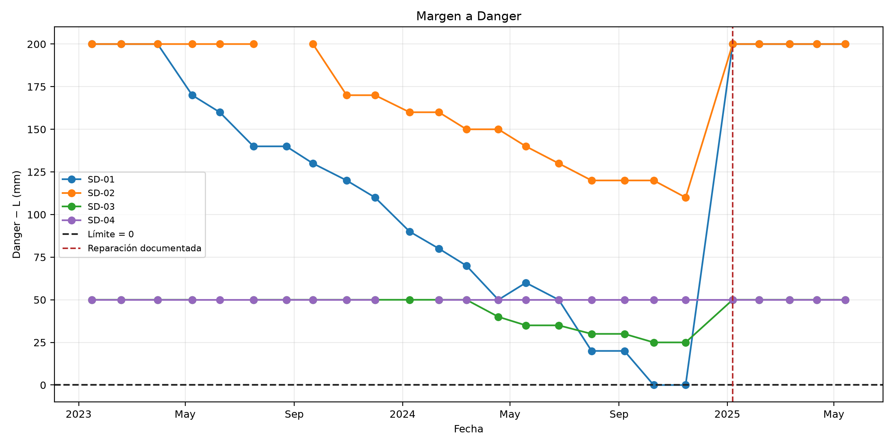
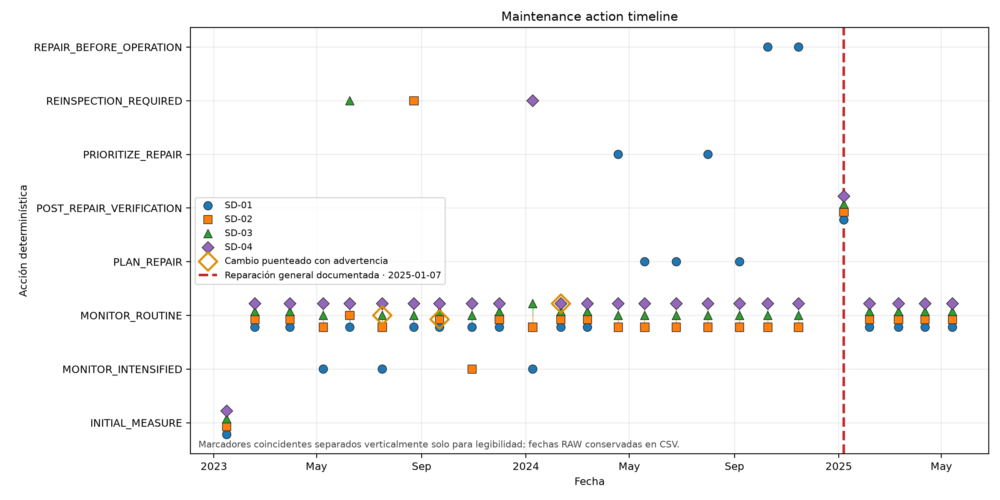
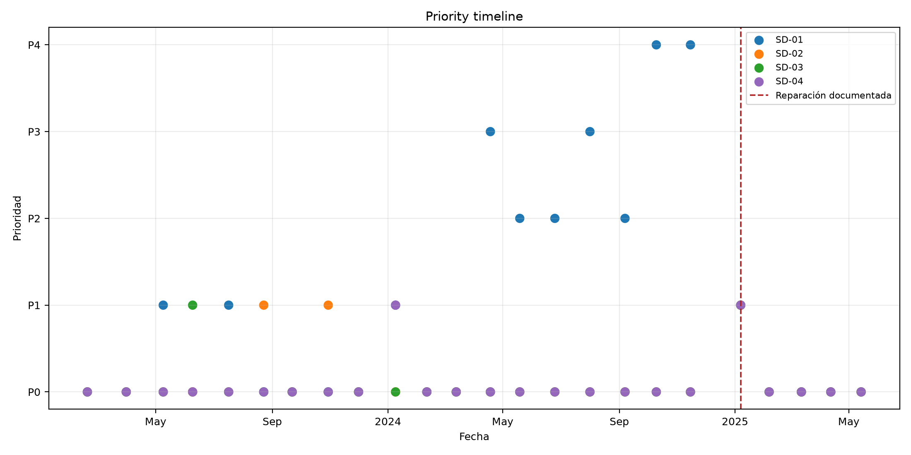
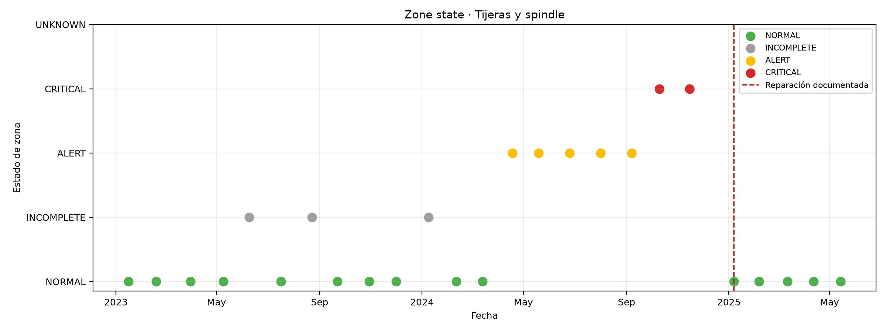
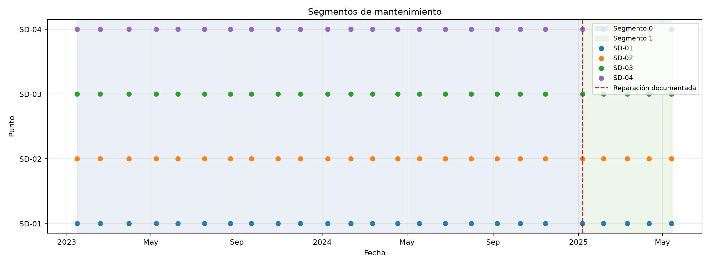

EH4-01 · Tijeras y spindle · 4 puntos · 100 filas y 25 fechas. Solo consume outputs validados de QA; no modifica RAW.
severity_ratio=L_raw/Danger; caution_utilization=L_raw/Caution. Márgenes: umbral−L_raw, en mm y como porcentaje del umbral. No se recortan márgenes negativos. Los NULL producen N/I/NaN.
Los deltas y las tasas proceden de QA y respetan la tolerancia de 10 mm únicamente para análisis de cambio; Caution, Danger y structural_state se mantienen desde QA.
La solicitud no especifica prioridad/modo para POST_REPAIR_VERIFICATION: se asigna explícitamente P1/INSPECTION como mapeo operativo conservador. N/I tiene precedencia sobre verificación post reparación para mantener REINSPECTION_REQUIRED.
Estados: {'Normal': 90, 'Alerta': 5, 'Crítico': 2, 'N/I': 3}. Acciones: {'MONITOR_ROUTINE': 78, 'INITIAL_MEASURE': 4, 'MONITOR_INTENSIFIED': 4, 'POST_REPAIR_VERIFICATION': 4, 'REINSPECTION_REQUIRED': 3, 'PLAN_REPAIR': 3, 'PRIORITIZE_REPAIR': 2, 'REPAIR_BEFORE_OPERATION': 2}. Prioridades: {'P0': 78, 'P1': 11, 'P2': 3, 'P3': 2, 'P4': 2}. Segmentos reparados: 1.
| date | from | to | responsible_points | worst_point |
|---|---|---|---|---|
| 2023-06-09 | NORMAL | INCOMPLETE | [SD-03] | SD-03 |
| 2023-07-17 | INCOMPLETE | NORMAL | [SD-03] | SD-01 |
| 2023-08-23 | NORMAL | INCOMPLETE | [SD-02] | SD-02 |
| 2023-09-22 | INCOMPLETE | NORMAL | [SD-02] | SD-01 |
| 2024-01-09 | NORMAL | INCOMPLETE | [SD-04] | SD-01 |
| 2024-02-11 | INCOMPLETE | NORMAL | [SD-04] | SD-01 |
| 2024-04-18 | NORMAL | ALERT | [SD-01] | SD-01 |
| 2024-10-10 | ALERT | CRITICAL | [SD-01] | SD-01 |
| 2025-01-07 | CRITICAL | NORMAL | [SD-01, SD-02, SD-03, SD-04] | SD-01 |
INCOMPLETE representa mezcla de mediciones normales y N/I; UNKNOWN significa que los cuatro puntos son N/I. CRITICAL domina ALERT, y ALERT domina estados incompletos/normales.
| date | maintenance_priority | maintenance_action | point |
|---|---|---|---|
| 2024-04-18 | P3 | PRIORITIZE_REPAIR | [SD-01] |
| 2024-05-19 | P2 | PLAN_REPAIR | [SD-01] |
| 2024-06-25 | P2 | PLAN_REPAIR | [SD-01] |
| 2024-08-01 | P3 | PRIORITIZE_REPAIR | [SD-01] |
| 2024-09-07 | P2 | PLAN_REPAIR | [SD-01] |
| 2024-10-10 | P4 | REPAIR_BEFORE_OPERATION | [SD-01] |
| 2024-11-15 | P4 | REPAIR_BEFORE_OPERATION | [SD-01] |
Fechas de reparación: ['2025-01-07']. El segmento aumenta automáticamente una vez por fecha de evento. La inspección del evento o la primera posterior ancla el segmento; no se mezclan tasas a través del reset.
| date | hours | zone_state | worst_point | max_severity_ratio | normal_count | alert_count | critical_count | not_inspected_count | significant_growth_count | highest_priority | recommended_action | maintenance_event | data_completeness_pct | priority_tie | priority_tie_note |
|---|---|---|---|---|---|---|---|---|---|---|---|---|---|---|---|
| 2023-01-16 | 41236.0 | NORMAL | SD-01 | 0.00 | 4 | 0 | 0 | 0 | 0 | None | INITIAL_MEASURE | False | 100.0 | False | |
| 2023-02-18 | 41767.7 | NORMAL | SD-01 | 0.00 | 4 | 0 | 0 | 0 | 0 | P0 | MONITOR_ROUTINE | False | 100.0 | True | 4 puntos comparten prioridad; se eligió mayor severity_ratio y empate residual por código ascendente. |
| 2023-03-31 | 42489.4 | NORMAL | SD-01 | 0.00 | 4 | 0 | 0 | 0 | 0 | P0 | MONITOR_ROUTINE | False | 100.0 | True | 4 puntos comparten prioridad; se eligió mayor severity_ratio y empate residual por código ascendente. |
| 2023-05-09 | 43139.3 | NORMAL | SD-01 | 0.15 | 4 | 0 | 0 | 0 | 1 | P1 | MONITOR_INTENSIFIED | False | 100.0 | False | |
| 2023-06-09 | 43626.8 | INCOMPLETE | SD-03 | 0.20 | 3 | 0 | 0 | 1 | 0 | P1 | REINSPECTION_REQUIRED | False | 75.0 | False | |
| 2023-07-17 | 44280.2 | NORMAL | SD-01 | 0.30 | 4 | 0 | 0 | 0 | 1 | P1 | MONITOR_INTENSIFIED | False | 100.0 | False | |
| 2023-08-23 | 44940.0 | INCOMPLETE | SD-02 | 0.30 | 3 | 0 | 0 | 1 | 0 | P1 | REINSPECTION_REQUIRED | False | 75.0 | False | |
| 2023-09-22 | 45436.5 | NORMAL | SD-01 | 0.35 | 4 | 0 | 0 | 0 | 0 | P0 | MONITOR_ROUTINE | False | 100.0 | True | 4 puntos comparten prioridad; se eligió mayor severity_ratio y empate residual por código ascendente. |
| 2023-10-30 | 46091.8 | NORMAL | SD-02 | 0.40 | 4 | 0 | 0 | 0 | 1 | P1 | MONITOR_INTENSIFIED | False | 100.0 | False | |
| 2023-12-01 | 46646.6 | NORMAL | SD-01 | 0.45 | 4 | 0 | 0 | 0 | 0 | P0 | MONITOR_ROUTINE | False | 100.0 | True | 4 puntos comparten prioridad; se eligió mayor severity_ratio y empate residual por código ascendente. |
| 2024-01-09 | 47308.1 | INCOMPLETE | SD-01 | 0.55 | 3 | 0 | 0 | 1 | 1 | P1 | MONITOR_INTENSIFIED | False | 75.0 | True | 2 puntos comparten prioridad; se eligió mayor severity_ratio y empate residual por código ascendente. |
| 2024-02-11 | 47870.3 | NORMAL | SD-01 | 0.60 | 4 | 0 | 0 | 0 | 0 | P0 | MONITOR_ROUTINE | False | 100.0 | True | 4 puntos comparten prioridad; se eligió mayor severity_ratio y empate residual por código ascendente. |
| 2024-03-13 | 48382.9 | NORMAL | SD-01 | 0.65 | 4 | 0 | 0 | 0 | 0 | P0 | MONITOR_ROUTINE | False | 100.0 | True | 4 puntos comparten prioridad; se eligió mayor severity_ratio y empate residual por código ascendente. |
| 2024-04-18 | 48953.6 | ALERT | SD-01 | 0.75 | 3 | 1 | 0 | 0 | 1 | P3 | PRIORITIZE_REPAIR | False | 100.0 | False | |
| 2024-05-19 | 49494.2 | ALERT | SD-01 | 0.70 | 3 | 1 | 0 | 0 | 0 | P2 | PLAN_REPAIR | False | 100.0 | False | |
| 2024-06-25 | 50076.5 | ALERT | SD-01 | 0.75 | 3 | 1 | 0 | 0 | 0 | P2 | PLAN_REPAIR | False | 100.0 | False | |
| 2024-08-01 | 50686.6 | ALERT | SD-01 | 0.90 | 3 | 1 | 0 | 0 | 1 | P3 | PRIORITIZE_REPAIR | False | 100.0 | False | |
| 2024-09-07 | 51310.7 | ALERT | SD-01 | 0.90 | 3 | 1 | 0 | 0 | 0 | P2 | PLAN_REPAIR | False | 100.0 | False | |
| 2024-10-10 | 51906.1 | CRITICAL | SD-01 | 1.00 | 3 | 0 | 1 | 0 | 1 | P4 | REPAIR_BEFORE_OPERATION | False | 100.0 | False | |
| 2024-11-15 | 52549.2 | CRITICAL | SD-01 | 1.00 | 3 | 0 | 1 | 0 | 0 | P4 | REPAIR_BEFORE_OPERATION | False | 100.0 | False | |
| 2025-01-07 | 53029.1 | NORMAL | SD-01 | 0.00 | 4 | 0 | 0 | 0 | 0 | P1 | POST_REPAIR_VERIFICATION | True | 100.0 | True | 4 puntos comparten prioridad; se eligió mayor severity_ratio y empate residual por código ascendente. |
| 2025-02-06 | 53486.7 | NORMAL | SD-01 | 0.00 | 4 | 0 | 0 | 0 | 0 | P0 | MONITOR_ROUTINE | False | 100.0 | True | 4 puntos comparten prioridad; se eligió mayor severity_ratio y empate residual por código ascendente. |
| 2025-03-12 | 54039.0 | NORMAL | SD-01 | 0.00 | 4 | 0 | 0 | 0 | 0 | P0 | MONITOR_ROUTINE | False | 100.0 | True | 4 puntos comparten prioridad; se eligió mayor severity_ratio y empate residual por código ascendente. |
| 2025-04-12 | 54509.7 | NORMAL | SD-01 | 0.00 | 4 | 0 | 0 | 0 | 0 | P0 | MONITOR_ROUTINE | False | 100.0 | True | 4 puntos comparten prioridad; se eligió mayor severity_ratio y empate residual por código ascendente. |
| 2025-05-14 | 55030.7 | NORMAL | SD-01 | 0.00 | 4 | 0 | 0 | 0 | 0 | P0 | MONITOR_ROUTINE | False | 100.0 | True | 4 puntos comparten prioridad; se eligió mayor severity_ratio y empate residual por código ascendente. |
| date | point | bridged_from_date | delta_L_raw | delta_L_bridged_raw | bridge_null_count | data_warning |
|---|---|---|---|---|---|---|
| 2023-07-17 | SD-03 | 2023-05-09 | NaN | 0.0 | 1 | GAP_SPANNING_CHANGE |
| 2023-09-22 | SD-02 | 2023-07-17 | NaN | 0.0 | 1 | GAP_SPANNING_CHANGE |
| 2024-02-11 | SD-04 | 2023-12-01 | NaN | 0.0 | 1 | GAP_SPANNING_CHANGE |
El cambio puenteado no sustituye ΔL entre inspecciones consecutivas y no se convierte en tasa.
Sin combinaciones fuera de regla en este histórico.
| test | status | detail |
|---|---|---|
| l_raw_unchanged | PASS | L_raw_mm coincide por fecha y punto con los valores QA; sin transformaciones |
| null_not_zero | PASS | NULL preservados; no imputados a 0 |
| official_limits_unchanged | PASS | Caution/Danger coinciden exactamente con qa_summary.json |
| structural_state_unchanged | PASS | Estado recomputado desde L_raw_mm y límites oficiales |
| severity_ratio_formula | PASS | severity_ratio = L_raw / Danger |
| margin_equations | PASS | Márgenes absolutos y porcentuales recalculados sin recortar negativos |
| no_trend_crosses_repair | PASS | Tasas RAW y efectivas NaN en intervalos de reinicio |
| maintenance_segments_coherent | PASS | Fechas de reparación: ['2025-01-07'] |
| critical_is_p4 | PASS | Críticos=2 |
| critical_repair_before_operation | PASS | Críticos=2 |
| ni_reinspection | PASS | N/I=3 |
| priority_at_most_p4 | PASS | Prioridades pertenecen a P0...P4 |
| zone_priority_is_point_max | PASS | Prioridad de zona igual a prioridad máxima de sus puntos |
| worst_point_exists | PASS | Cada worst_point existe en la inspección correspondiente |
| zone_completeness_range | PASS | Completitud entre 0 y 100 % |
| raw_source_hash_unchanged | PASS | SHA-256 del Excel RAW coincide con el snapshot del QA |
| delta_growth_qa_sources_agree | PASS | sd_delta_L.csv y sd_growth_rates.csv coinciden por fecha y punto |
| initial_measure_labeled | PASS | Una primera medición válida por punto se identifica INITIAL_MEASURE |
| bridged_changes_are_flagged | PASS | Todo cambio a través de NULL queda separado y advertido |
| bridges_do_not_replace_consecutive_delta | PASS | El cambio puenteado no reemplaza ΔL ni su clase consecutiva |
| bridged_changes_have_no_growth_rate | PASS | No se calcula tasa ordinaria para cambios puenteados |
| current_nulls_warned | PASS | NULL actuales conservan advertencia propia y acción de reinspección |
| no_target_normal_n_i_undefined | PASS | Inicio de serie y observaciones posteriores a NULL tienen tratamiento explícito |
| date | hours | equipment | zone | inspector | point | description | L_raw_mm | caution_mm | danger_mm | structural_state | severity_ratio | caution_utilization | margin_to_caution_mm | margin_to_danger_mm | margin_to_caution_pct | margin_to_danger_pct | delta_L_raw | delta_L_effective | change_class | delta_L_bridged_raw | bridged_change_class | bridged_from_date | bridged_from_hours | bridged_elapsed_days | bridged_elapsed_hours | bridge_null_count | gap_spanning_change | data_warning | raw_growth_rate_mm_1000h | effective_growth_rate_mm_1000h | maintenance_event | maintenance_segment | days_since_last_inspection | hours_since_last_inspection | days_since_last_repair | hours_since_last_repair | inspections_since_last_repair | maintenance_action | maintenance_priority | maintenance_mode | decision_reason | is_first_post_repair_inspection | is_initial_measure | fila_excel_origen |
|---|---|---|---|---|---|---|---|---|---|---|---|---|---|---|---|---|---|---|---|---|---|---|---|---|---|---|---|---|---|---|---|---|---|---|---|---|---|---|---|---|---|---|---|---|
| 2023-01-16 | 41236.0 | EH4-01 | Tijeras y spindle (suspensión delantera) | INSP-01 | SD-01 | Metal base de tijeras, lado derecho | 0.0 | 140 | 200 | Normal | 0.00 | 0.000000 | 140.0 | 200.0 | 100.000000 | 100.0 | NaN | NaN | N_I | NaN | NaT | NaN | NaN | NaN | 0 | False | NaN | NaN | False | 0 | NaN | NaN | NaN | NaN | NaN | INITIAL_MEASURE | None | None | Primera medición válida de la serie; establece línea base y no tiene ΔL previo. | False | True | 10 | ||
| 2023-01-16 | 41236.0 | EH4-01 | Tijeras y spindle (suspensión delantera) | INSP-01 | SD-02 | Metal base de tijeras, lado izquierdo | 0.0 | 140 | 200 | Normal | 0.00 | 0.000000 | 140.0 | 200.0 | 100.000000 | 100.0 | NaN | NaN | N_I | NaN | NaT | NaN | NaN | NaN | 0 | False | NaN | NaN | False | 0 | NaN | NaN | NaN | NaN | NaN | INITIAL_MEASURE | None | None | Primera medición válida de la serie; establece línea base y no tiene ΔL previo. | False | True | 11 | ||
| 2023-01-16 | 41236.0 | EH4-01 | Tijeras y spindle (suspensión delantera) | INSP-01 | SD-03 | Metal base de spindle, lado derecho | 0.0 | 35 | 50 | Normal | 0.00 | 0.000000 | 35.0 | 50.0 | 100.000000 | 100.0 | NaN | NaN | N_I | NaN | NaT | NaN | NaN | NaN | 0 | False | NaN | NaN | False | 0 | NaN | NaN | NaN | NaN | NaN | INITIAL_MEASURE | None | None | Primera medición válida de la serie; establece línea base y no tiene ΔL previo. | False | True | 12 | ||
| 2023-01-16 | 41236.0 | EH4-01 | Tijeras y spindle (suspensión delantera) | INSP-01 | SD-04 | Metal base de spindle, lado izquierdo | 0.0 | 35 | 50 | Normal | 0.00 | 0.000000 | 35.0 | 50.0 | 100.000000 | 100.0 | NaN | NaN | N_I | NaN | NaT | NaN | NaN | NaN | 0 | False | NaN | NaN | False | 0 | NaN | NaN | NaN | NaN | NaN | INITIAL_MEASURE | None | None | Primera medición válida de la serie; establece línea base y no tiene ΔL previo. | False | True | 13 | ||
| 2023-02-18 | 41767.7 | EH4-01 | Tijeras y spindle (suspensión delantera) | INSP-02 | SD-01 | Metal base de tijeras, lado derecho | 0.0 | 140 | 200 | Normal | 0.00 | 0.000000 | 140.0 | 200.0 | 100.000000 | 100.0 | 0.0 | 0.0 | STABLE_WITHIN_TOLERANCE | NaN | NaT | NaN | NaN | NaN | 0 | False | 0.000000 | 0.000000 | False | 0 | 33.0 | 531.7 | NaN | NaN | NaN | MONITOR_ROUTINE | P0 | PREVENTIVE | Normal y sin cambio superior a la tolerancia de medición. | False | False | 22 | ||
| 2023-02-18 | 41767.7 | EH4-01 | Tijeras y spindle (suspensión delantera) | INSP-02 | SD-02 | Metal base de tijeras, lado izquierdo | 0.0 | 140 | 200 | Normal | 0.00 | 0.000000 | 140.0 | 200.0 | 100.000000 | 100.0 | 0.0 | 0.0 | STABLE_WITHIN_TOLERANCE | NaN | NaT | NaN | NaN | NaN | 0 | False | 0.000000 | 0.000000 | False | 0 | 33.0 | 531.7 | NaN | NaN | NaN | MONITOR_ROUTINE | P0 | PREVENTIVE | Normal y sin cambio superior a la tolerancia de medición. | False | False | 23 | ||
| 2023-02-18 | 41767.7 | EH4-01 | Tijeras y spindle (suspensión delantera) | INSP-02 | SD-03 | Metal base de spindle, lado derecho | 0.0 | 35 | 50 | Normal | 0.00 | 0.000000 | 35.0 | 50.0 | 100.000000 | 100.0 | 0.0 | 0.0 | STABLE_WITHIN_TOLERANCE | NaN | NaT | NaN | NaN | NaN | 0 | False | 0.000000 | 0.000000 | False | 0 | 33.0 | 531.7 | NaN | NaN | NaN | MONITOR_ROUTINE | P0 | PREVENTIVE | Normal y sin cambio superior a la tolerancia de medición. | False | False | 24 | ||
| 2023-02-18 | 41767.7 | EH4-01 | Tijeras y spindle (suspensión delantera) | INSP-02 | SD-04 | Metal base de spindle, lado izquierdo | 0.0 | 35 | 50 | Normal | 0.00 | 0.000000 | 35.0 | 50.0 | 100.000000 | 100.0 | 0.0 | 0.0 | STABLE_WITHIN_TOLERANCE | NaN | NaT | NaN | NaN | NaN | 0 | False | 0.000000 | 0.000000 | False | 0 | 33.0 | 531.7 | NaN | NaN | NaN | MONITOR_ROUTINE | P0 | PREVENTIVE | Normal y sin cambio superior a la tolerancia de medición. | False | False | 25 | ||
| 2023-03-31 | 42489.4 | EH4-01 | Tijeras y spindle (suspensión delantera) | INSP-03 | SD-01 | Metal base de tijeras, lado derecho | 0.0 | 140 | 200 | Normal | 0.00 | 0.000000 | 140.0 | 200.0 | 100.000000 | 100.0 | 0.0 | 0.0 | STABLE_WITHIN_TOLERANCE | NaN | NaT | NaN | NaN | NaN | 0 | False | 0.000000 | 0.000000 | False | 0 | 41.0 | 721.7 | NaN | NaN | NaN | MONITOR_ROUTINE | P0 | PREVENTIVE | Normal y sin cambio superior a la tolerancia de medición. | False | False | 34 | ||
| 2023-03-31 | 42489.4 | EH4-01 | Tijeras y spindle (suspensión delantera) | INSP-03 | SD-02 | Metal base de tijeras, lado izquierdo | 0.0 | 140 | 200 | Normal | 0.00 | 0.000000 | 140.0 | 200.0 | 100.000000 | 100.0 | 0.0 | 0.0 | STABLE_WITHIN_TOLERANCE | NaN | NaT | NaN | NaN | NaN | 0 | False | 0.000000 | 0.000000 | False | 0 | 41.0 | 721.7 | NaN | NaN | NaN | MONITOR_ROUTINE | P0 | PREVENTIVE | Normal y sin cambio superior a la tolerancia de medición. | False | False | 35 | ||
| 2023-03-31 | 42489.4 | EH4-01 | Tijeras y spindle (suspensión delantera) | INSP-03 | SD-03 | Metal base de spindle, lado derecho | 0.0 | 35 | 50 | Normal | 0.00 | 0.000000 | 35.0 | 50.0 | 100.000000 | 100.0 | 0.0 | 0.0 | STABLE_WITHIN_TOLERANCE | NaN | NaT | NaN | NaN | NaN | 0 | False | 0.000000 | 0.000000 | False | 0 | 41.0 | 721.7 | NaN | NaN | NaN | MONITOR_ROUTINE | P0 | PREVENTIVE | Normal y sin cambio superior a la tolerancia de medición. | False | False | 36 | ||
| 2023-03-31 | 42489.4 | EH4-01 | Tijeras y spindle (suspensión delantera) | INSP-03 | SD-04 | Metal base de spindle, lado izquierdo | 0.0 | 35 | 50 | Normal | 0.00 | 0.000000 | 35.0 | 50.0 | 100.000000 | 100.0 | 0.0 | 0.0 | STABLE_WITHIN_TOLERANCE | NaN | NaT | NaN | NaN | NaN | 0 | False | 0.000000 | 0.000000 | False | 0 | 41.0 | 721.7 | NaN | NaN | NaN | MONITOR_ROUTINE | P0 | PREVENTIVE | Normal y sin cambio superior a la tolerancia de medición. | False | False | 37 | ||
| 2023-05-09 | 43139.3 | EH4-01 | Tijeras y spindle (suspensión delantera) | INSP-01 | SD-01 | Metal base de tijeras, lado derecho | 30.0 | 140 | 200 | Normal | 0.15 | 0.214286 | 110.0 | 170.0 | 78.571429 | 85.0 | 30.0 | 30.0 | SIGNIFICANT_GROWTH | NaN | NaT | NaN | NaN | NaN | 0 | False | 46.160948 | 46.160948 | False | 0 | 39.0 | 649.9 | NaN | NaN | NaN | MONITOR_INTENSIFIED | P1 | PREVENTIVE | Normal con crecimiento significativo de 30 mm desde la inspección anterior. | False | False | 46 | ||
| 2023-05-09 | 43139.3 | EH4-01 | Tijeras y spindle (suspensión delantera) | INSP-01 | SD-02 | Metal base de tijeras, lado izquierdo | 0.0 | 140 | 200 | Normal | 0.00 | 0.000000 | 140.0 | 200.0 | 100.000000 | 100.0 | 0.0 | 0.0 | STABLE_WITHIN_TOLERANCE | NaN | NaT | NaN | NaN | NaN | 0 | False | 0.000000 | 0.000000 | False | 0 | 39.0 | 649.9 | NaN | NaN | NaN | MONITOR_ROUTINE | P0 | PREVENTIVE | Normal y sin cambio superior a la tolerancia de medición. | False | False | 47 | ||
| 2023-05-09 | 43139.3 | EH4-01 | Tijeras y spindle (suspensión delantera) | INSP-01 | SD-03 | Metal base de spindle, lado derecho | 0.0 | 35 | 50 | Normal | 0.00 | 0.000000 | 35.0 | 50.0 | 100.000000 | 100.0 | 0.0 | 0.0 | STABLE_WITHIN_TOLERANCE | NaN | NaT | NaN | NaN | NaN | 0 | False | 0.000000 | 0.000000 | False | 0 | 39.0 | 649.9 | NaN | NaN | NaN | MONITOR_ROUTINE | P0 | PREVENTIVE | Normal y sin cambio superior a la tolerancia de medición. | False | False | 48 | ||
| 2023-05-09 | 43139.3 | EH4-01 | Tijeras y spindle (suspensión delantera) | INSP-01 | SD-04 | Metal base de spindle, lado izquierdo | 0.0 | 35 | 50 | Normal | 0.00 | 0.000000 | 35.0 | 50.0 | 100.000000 | 100.0 | 0.0 | 0.0 | STABLE_WITHIN_TOLERANCE | NaN | NaT | NaN | NaN | NaN | 0 | False | 0.000000 | 0.000000 | False | 0 | 39.0 | 649.9 | NaN | NaN | NaN | MONITOR_ROUTINE | P0 | PREVENTIVE | Normal y sin cambio superior a la tolerancia de medición. | False | False | 49 | ||
| 2023-06-09 | 43626.8 | EH4-01 | Tijeras y spindle (suspensión delantera) | INSP-03 | SD-01 | Metal base de tijeras, lado derecho | 40.0 | 140 | 200 | Normal | 0.20 | 0.285714 | 100.0 | 160.0 | 71.428571 | 80.0 | 10.0 | 0.0 | STABLE_WITHIN_TOLERANCE | NaN | NaT | NaN | NaN | NaN | 0 | False | 20.512821 | 0.000000 | False | 0 | 31.0 | 487.5 | NaN | NaN | NaN | MONITOR_ROUTINE | P0 | PREVENTIVE | Normal y sin cambio superior a la tolerancia de medición. | False | False | 58 | ||
| 2023-06-09 | 43626.8 | EH4-01 | Tijeras y spindle (suspensión delantera) | INSP-03 | SD-02 | Metal base de tijeras, lado izquierdo | 0.0 | 140 | 200 | Normal | 0.00 | 0.000000 | 140.0 | 200.0 | 100.000000 | 100.0 | 0.0 | 0.0 | STABLE_WITHIN_TOLERANCE | NaN | NaT | NaN | NaN | NaN | 0 | False | 0.000000 | 0.000000 | False | 0 | 31.0 | 487.5 | NaN | NaN | NaN | MONITOR_ROUTINE | P0 | PREVENTIVE | Normal y sin cambio superior a la tolerancia de medición. | False | False | 59 | ||
| 2023-06-09 | 43626.8 | EH4-01 | Tijeras y spindle (suspensión delantera) | INSP-03 | SD-03 | Metal base de spindle, lado derecho | NaN | 35 | 50 | N/I | NaN | NaN | NaN | NaN | NaN | NaN | NaN | NaN | N_I | NaN | NaT | NaN | NaN | NaN | 0 | False | CURRENT_MEASUREMENT_NULL | NaN | NaN | False | 0 | 31.0 | 487.5 | NaN | NaN | NaN | REINSPECTION_REQUIRED | P1 | INSPECTION | Medición no disponible. Condición estructural no evaluable. | False | False | 60 | |
| 2023-06-09 | 43626.8 | EH4-01 | Tijeras y spindle (suspensión delantera) | INSP-03 | SD-04 | Metal base de spindle, lado izquierdo | 0.0 | 35 | 50 | Normal | 0.00 | 0.000000 | 35.0 | 50.0 | 100.000000 | 100.0 | 0.0 | 0.0 | STABLE_WITHIN_TOLERANCE | NaN | NaT | NaN | NaN | NaN | 0 | False | 0.000000 | 0.000000 | False | 0 | 31.0 | 487.5 | NaN | NaN | NaN | MONITOR_ROUTINE | P0 | PREVENTIVE | Normal y sin cambio superior a la tolerancia de medición. | False | False | 61 | ||
| 2023-07-17 | 44280.2 | EH4-01 | Tijeras y spindle (suspensión delantera) | INSP-03 | SD-01 | Metal base de tijeras, lado derecho | 60.0 | 140 | 200 | Normal | 0.30 | 0.428571 | 80.0 | 140.0 | 57.142857 | 70.0 | 20.0 | 20.0 | SIGNIFICANT_GROWTH | NaN | NaT | NaN | NaN | NaN | 0 | False | 30.609122 | 30.609122 | False | 0 | 38.0 | 653.4 | NaN | NaN | NaN | MONITOR_INTENSIFIED | P1 | PREVENTIVE | Normal con crecimiento significativo de 20 mm desde la inspección anterior. | False | False | 70 | ||
| 2023-07-17 | 44280.2 | EH4-01 | Tijeras y spindle (suspensión delantera) | INSP-03 | SD-02 | Metal base de tijeras, lado izquierdo | 0.0 | 140 | 200 | Normal | 0.00 | 0.000000 | 140.0 | 200.0 | 100.000000 | 100.0 | 0.0 | 0.0 | STABLE_WITHIN_TOLERANCE | NaN | NaT | NaN | NaN | NaN | 0 | False | 0.000000 | 0.000000 | False | 0 | 38.0 | 653.4 | NaN | NaN | NaN | MONITOR_ROUTINE | P0 | PREVENTIVE | Normal y sin cambio superior a la tolerancia de medición. | False | False | 71 | ||
| 2023-07-17 | 44280.2 | EH4-01 | Tijeras y spindle (suspensión delantera) | INSP-03 | SD-03 | Metal base de spindle, lado derecho | 0.0 | 35 | 50 | Normal | 0.00 | 0.000000 | 35.0 | 50.0 | 100.000000 | 100.0 | NaN | NaN | N_I | 0.0 | GAP_SPANNING_CHANGE | 2023-05-09 | 43139.3 | 69.0 | 1140.9 | 1 | True | GAP_SPANNING_CHANGE | NaN | NaN | False | 0 | 38.0 | 653.4 | NaN | NaN | NaN | MONITOR_ROUTINE | P0 | PREVENTIVE | Estado actual Normal. ΔL consecutivo no calculable por NULL previo; cambio puenteado 0 mm mostrado con advertencia y no usado para priorizar. | False | False | 72 |
| 2023-07-17 | 44280.2 | EH4-01 | Tijeras y spindle (suspensión delantera) | INSP-03 | SD-04 | Metal base de spindle, lado izquierdo | 0.0 | 35 | 50 | Normal | 0.00 | 0.000000 | 35.0 | 50.0 | 100.000000 | 100.0 | 0.0 | 0.0 | STABLE_WITHIN_TOLERANCE | NaN | NaT | NaN | NaN | NaN | 0 | False | 0.000000 | 0.000000 | False | 0 | 38.0 | 653.4 | NaN | NaN | NaN | MONITOR_ROUTINE | P0 | PREVENTIVE | Normal y sin cambio superior a la tolerancia de medición. | False | False | 73 | ||
| 2023-08-23 | 44940.0 | EH4-01 | Tijeras y spindle (suspensión delantera) | INSP-01 | SD-01 | Metal base de tijeras, lado derecho | 60.0 | 140 | 200 | Normal | 0.30 | 0.428571 | 80.0 | 140.0 | 57.142857 | 70.0 | 0.0 | 0.0 | STABLE_WITHIN_TOLERANCE | NaN | NaT | NaN | NaN | NaN | 0 | False | 0.000000 | 0.000000 | False | 0 | 37.0 | 659.8 | NaN | NaN | NaN | MONITOR_ROUTINE | P0 | PREVENTIVE | Normal y sin cambio superior a la tolerancia de medición. | False | False | 82 | ||
| 2023-08-23 | 44940.0 | EH4-01 | Tijeras y spindle (suspensión delantera) | INSP-01 | SD-02 | Metal base de tijeras, lado izquierdo | NaN | 140 | 200 | N/I | NaN | NaN | NaN | NaN | NaN | NaN | NaN | NaN | N_I | NaN | NaT | NaN | NaN | NaN | 0 | False | CURRENT_MEASUREMENT_NULL | NaN | NaN | False | 0 | 37.0 | 659.8 | NaN | NaN | NaN | REINSPECTION_REQUIRED | P1 | INSPECTION | Medición no disponible. Condición estructural no evaluable. | False | False | 83 | |
| 2023-08-23 | 44940.0 | EH4-01 | Tijeras y spindle (suspensión delantera) | INSP-01 | SD-03 | Metal base de spindle, lado derecho | 0.0 | 35 | 50 | Normal | 0.00 | 0.000000 | 35.0 | 50.0 | 100.000000 | 100.0 | 0.0 | 0.0 | STABLE_WITHIN_TOLERANCE | NaN | NaT | NaN | NaN | NaN | 0 | False | 0.000000 | 0.000000 | False | 0 | 37.0 | 659.8 | NaN | NaN | NaN | MONITOR_ROUTINE | P0 | PREVENTIVE | Normal y sin cambio superior a la tolerancia de medición. | False | False | 84 | ||
| 2023-08-23 | 44940.0 | EH4-01 | Tijeras y spindle (suspensión delantera) | INSP-01 | SD-04 | Metal base de spindle, lado izquierdo | 0.0 | 35 | 50 | Normal | 0.00 | 0.000000 | 35.0 | 50.0 | 100.000000 | 100.0 | 0.0 | 0.0 | STABLE_WITHIN_TOLERANCE | NaN | NaT | NaN | NaN | NaN | 0 | False | 0.000000 | 0.000000 | False | 0 | 37.0 | 659.8 | NaN | NaN | NaN | MONITOR_ROUTINE | P0 | PREVENTIVE | Normal y sin cambio superior a la tolerancia de medición. | False | False | 85 | ||
| 2023-09-22 | 45436.5 | EH4-01 | Tijeras y spindle (suspensión delantera) | INSP-02 | SD-01 | Metal base de tijeras, lado derecho | 70.0 | 140 | 200 | Normal | 0.35 | 0.500000 | 70.0 | 130.0 | 50.000000 | 65.0 | 10.0 | 0.0 | STABLE_WITHIN_TOLERANCE | NaN | NaT | NaN | NaN | NaN | 0 | False | 20.140987 | 0.000000 | False | 0 | 30.0 | 496.5 | NaN | NaN | NaN | MONITOR_ROUTINE | P0 | PREVENTIVE | Normal y sin cambio superior a la tolerancia de medición. | False | False | 94 | ||
| 2023-09-22 | 45436.5 | EH4-01 | Tijeras y spindle (suspensión delantera) | INSP-02 | SD-02 | Metal base de tijeras, lado izquierdo | 0.0 | 140 | 200 | Normal | 0.00 | 0.000000 | 140.0 | 200.0 | 100.000000 | 100.0 | NaN | NaN | N_I | 0.0 | GAP_SPANNING_CHANGE | 2023-07-17 | 44280.2 | 67.0 | 1156.3 | 1 | True | GAP_SPANNING_CHANGE | NaN | NaN | False | 0 | 30.0 | 496.5 | NaN | NaN | NaN | MONITOR_ROUTINE | P0 | PREVENTIVE | Estado actual Normal. ΔL consecutivo no calculable por NULL previo; cambio puenteado 0 mm mostrado con advertencia y no usado para priorizar. | False | False | 95 |
| 2023-09-22 | 45436.5 | EH4-01 | Tijeras y spindle (suspensión delantera) | INSP-02 | SD-03 | Metal base de spindle, lado derecho | 0.0 | 35 | 50 | Normal | 0.00 | 0.000000 | 35.0 | 50.0 | 100.000000 | 100.0 | 0.0 | 0.0 | STABLE_WITHIN_TOLERANCE | NaN | NaT | NaN | NaN | NaN | 0 | False | 0.000000 | 0.000000 | False | 0 | 30.0 | 496.5 | NaN | NaN | NaN | MONITOR_ROUTINE | P0 | PREVENTIVE | Normal y sin cambio superior a la tolerancia de medición. | False | False | 96 | ||
| 2023-09-22 | 45436.5 | EH4-01 | Tijeras y spindle (suspensión delantera) | INSP-02 | SD-04 | Metal base de spindle, lado izquierdo | 0.0 | 35 | 50 | Normal | 0.00 | 0.000000 | 35.0 | 50.0 | 100.000000 | 100.0 | 0.0 | 0.0 | STABLE_WITHIN_TOLERANCE | NaN | NaT | NaN | NaN | NaN | 0 | False | 0.000000 | 0.000000 | False | 0 | 30.0 | 496.5 | NaN | NaN | NaN | MONITOR_ROUTINE | P0 | PREVENTIVE | Normal y sin cambio superior a la tolerancia de medición. | False | False | 97 | ||
| 2023-10-30 | 46091.8 | EH4-01 | Tijeras y spindle (suspensión delantera) | INSP-03 | SD-01 | Metal base de tijeras, lado derecho | 80.0 | 140 | 200 | Normal | 0.40 | 0.571429 | 60.0 | 120.0 | 42.857143 | 60.0 | 10.0 | 0.0 | STABLE_WITHIN_TOLERANCE | NaN | NaT | NaN | NaN | NaN | 0 | False | 15.260186 | 0.000000 | False | 0 | 38.0 | 655.3 | NaN | NaN | NaN | MONITOR_ROUTINE | P0 | PREVENTIVE | Normal y sin cambio superior a la tolerancia de medición. | False | False | 106 | ||
| 2023-10-30 | 46091.8 | EH4-01 | Tijeras y spindle (suspensión delantera) | INSP-03 | SD-02 | Metal base de tijeras, lado izquierdo | 30.0 | 140 | 200 | Normal | 0.15 | 0.214286 | 110.0 | 170.0 | 78.571429 | 85.0 | 30.0 | 30.0 | SIGNIFICANT_GROWTH | NaN | NaT | NaN | NaN | NaN | 0 | False | 45.780559 | 45.780559 | False | 0 | 38.0 | 655.3 | NaN | NaN | NaN | MONITOR_INTENSIFIED | P1 | PREVENTIVE | Normal con crecimiento significativo de 30 mm desde la inspección anterior. | False | False | 107 | ||
| 2023-10-30 | 46091.8 | EH4-01 | Tijeras y spindle (suspensión delantera) | INSP-03 | SD-03 | Metal base de spindle, lado derecho | 0.0 | 35 | 50 | Normal | 0.00 | 0.000000 | 35.0 | 50.0 | 100.000000 | 100.0 | 0.0 | 0.0 | STABLE_WITHIN_TOLERANCE | NaN | NaT | NaN | NaN | NaN | 0 | False | 0.000000 | 0.000000 | False | 0 | 38.0 | 655.3 | NaN | NaN | NaN | MONITOR_ROUTINE | P0 | PREVENTIVE | Normal y sin cambio superior a la tolerancia de medición. | False | False | 108 | ||
| 2023-10-30 | 46091.8 | EH4-01 | Tijeras y spindle (suspensión delantera) | INSP-03 | SD-04 | Metal base de spindle, lado izquierdo | 0.0 | 35 | 50 | Normal | 0.00 | 0.000000 | 35.0 | 50.0 | 100.000000 | 100.0 | 0.0 | 0.0 | STABLE_WITHIN_TOLERANCE | NaN | NaT | NaN | NaN | NaN | 0 | False | 0.000000 | 0.000000 | False | 0 | 38.0 | 655.3 | NaN | NaN | NaN | MONITOR_ROUTINE | P0 | PREVENTIVE | Normal y sin cambio superior a la tolerancia de medición. | False | False | 109 | ||
| 2023-12-01 | 46646.6 | EH4-01 | Tijeras y spindle (suspensión delantera) | INSP-02 | SD-01 | Metal base de tijeras, lado derecho | 90.0 | 140 | 200 | Normal | 0.45 | 0.642857 | 50.0 | 110.0 | 35.714286 | 55.0 | 10.0 | 0.0 | STABLE_WITHIN_TOLERANCE | NaN | NaT | NaN | NaN | NaN | 0 | False | 18.024513 | 0.000000 | False | 0 | 32.0 | 554.8 | NaN | NaN | NaN | MONITOR_ROUTINE | P0 | PREVENTIVE | Normal y sin cambio superior a la tolerancia de medición. | False | False | 118 | ||
| 2023-12-01 | 46646.6 | EH4-01 | Tijeras y spindle (suspensión delantera) | INSP-02 | SD-02 | Metal base de tijeras, lado izquierdo | 30.0 | 140 | 200 | Normal | 0.15 | 0.214286 | 110.0 | 170.0 | 78.571429 | 85.0 | 0.0 | 0.0 | STABLE_WITHIN_TOLERANCE | NaN | NaT | NaN | NaN | NaN | 0 | False | 0.000000 | 0.000000 | False | 0 | 32.0 | 554.8 | NaN | NaN | NaN | MONITOR_ROUTINE | P0 | PREVENTIVE | Normal y sin cambio superior a la tolerancia de medición. | False | False | 119 | ||
| 2023-12-01 | 46646.6 | EH4-01 | Tijeras y spindle (suspensión delantera) | INSP-02 | SD-03 | Metal base de spindle, lado derecho | 0.0 | 35 | 50 | Normal | 0.00 | 0.000000 | 35.0 | 50.0 | 100.000000 | 100.0 | 0.0 | 0.0 | STABLE_WITHIN_TOLERANCE | NaN | NaT | NaN | NaN | NaN | 0 | False | 0.000000 | 0.000000 | False | 0 | 32.0 | 554.8 | NaN | NaN | NaN | MONITOR_ROUTINE | P0 | PREVENTIVE | Normal y sin cambio superior a la tolerancia de medición. | False | False | 120 | ||
| 2023-12-01 | 46646.6 | EH4-01 | Tijeras y spindle (suspensión delantera) | INSP-02 | SD-04 | Metal base de spindle, lado izquierdo | 0.0 | 35 | 50 | Normal | 0.00 | 0.000000 | 35.0 | 50.0 | 100.000000 | 100.0 | 0.0 | 0.0 | STABLE_WITHIN_TOLERANCE | NaN | NaT | NaN | NaN | NaN | 0 | False | 0.000000 | 0.000000 | False | 0 | 32.0 | 554.8 | NaN | NaN | NaN | MONITOR_ROUTINE | P0 | PREVENTIVE | Normal y sin cambio superior a la tolerancia de medición. | False | False | 121 | ||
| 2024-01-09 | 47308.1 | EH4-01 | Tijeras y spindle (suspensión delantera) | INSP-03 | SD-01 | Metal base de tijeras, lado derecho | 110.0 | 140 | 200 | Normal | 0.55 | 0.785714 | 30.0 | 90.0 | 21.428571 | 45.0 | 20.0 | 20.0 | SIGNIFICANT_GROWTH | NaN | NaT | NaN | NaN | NaN | 0 | False | 30.234316 | 30.234316 | False | 0 | 39.0 | 661.5 | NaN | NaN | NaN | MONITOR_INTENSIFIED | P1 | PREVENTIVE | Normal con crecimiento significativo de 20 mm desde la inspección anterior. | False | False | 130 | ||
| 2024-01-09 | 47308.1 | EH4-01 | Tijeras y spindle (suspensión delantera) | INSP-03 | SD-02 | Metal base de tijeras, lado izquierdo | 40.0 | 140 | 200 | Normal | 0.20 | 0.285714 | 100.0 | 160.0 | 71.428571 | 80.0 | 10.0 | 0.0 | STABLE_WITHIN_TOLERANCE | NaN | NaT | NaN | NaN | NaN | 0 | False | 15.117158 | 0.000000 | False | 0 | 39.0 | 661.5 | NaN | NaN | NaN | MONITOR_ROUTINE | P0 | PREVENTIVE | Normal y sin cambio superior a la tolerancia de medición. | False | False | 131 | ||
| 2024-01-09 | 47308.1 | EH4-01 | Tijeras y spindle (suspensión delantera) | INSP-03 | SD-03 | Metal base de spindle, lado derecho | 0.0 | 35 | 50 | Normal | 0.00 | 0.000000 | 35.0 | 50.0 | 100.000000 | 100.0 | 0.0 | 0.0 | STABLE_WITHIN_TOLERANCE | NaN | NaT | NaN | NaN | NaN | 0 | False | 0.000000 | 0.000000 | False | 0 | 39.0 | 661.5 | NaN | NaN | NaN | MONITOR_ROUTINE | P0 | PREVENTIVE | Normal y sin cambio superior a la tolerancia de medición. | False | False | 132 | ||
| 2024-01-09 | 47308.1 | EH4-01 | Tijeras y spindle (suspensión delantera) | INSP-03 | SD-04 | Metal base de spindle, lado izquierdo | NaN | 35 | 50 | N/I | NaN | NaN | NaN | NaN | NaN | NaN | NaN | NaN | N_I | NaN | NaT | NaN | NaN | NaN | 0 | False | CURRENT_MEASUREMENT_NULL | NaN | NaN | False | 0 | 39.0 | 661.5 | NaN | NaN | NaN | REINSPECTION_REQUIRED | P1 | INSPECTION | Medición no disponible. Condición estructural no evaluable. | False | False | 133 | |
| 2024-02-11 | 47870.3 | EH4-01 | Tijeras y spindle (suspensión delantera) | INSP-03 | SD-01 | Metal base de tijeras, lado derecho | 120.0 | 140 | 200 | Normal | 0.60 | 0.857143 | 20.0 | 80.0 | 14.285714 | 40.0 | 10.0 | 0.0 | STABLE_WITHIN_TOLERANCE | NaN | NaT | NaN | NaN | NaN | 0 | False | 17.787264 | 0.000000 | False | 0 | 33.0 | 562.2 | NaN | NaN | NaN | MONITOR_ROUTINE | P0 | PREVENTIVE | Normal y sin cambio superior a la tolerancia de medición. | False | False | 142 | ||
| 2024-02-11 | 47870.3 | EH4-01 | Tijeras y spindle (suspensión delantera) | INSP-03 | SD-02 | Metal base de tijeras, lado izquierdo | 40.0 | 140 | 200 | Normal | 0.20 | 0.285714 | 100.0 | 160.0 | 71.428571 | 80.0 | 0.0 | 0.0 | STABLE_WITHIN_TOLERANCE | NaN | NaT | NaN | NaN | NaN | 0 | False | 0.000000 | 0.000000 | False | 0 | 33.0 | 562.2 | NaN | NaN | NaN | MONITOR_ROUTINE | P0 | PREVENTIVE | Normal y sin cambio superior a la tolerancia de medición. | False | False | 143 | ||
| 2024-02-11 | 47870.3 | EH4-01 | Tijeras y spindle (suspensión delantera) | INSP-03 | SD-03 | Metal base de spindle, lado derecho | 0.0 | 35 | 50 | Normal | 0.00 | 0.000000 | 35.0 | 50.0 | 100.000000 | 100.0 | 0.0 | 0.0 | STABLE_WITHIN_TOLERANCE | NaN | NaT | NaN | NaN | NaN | 0 | False | 0.000000 | 0.000000 | False | 0 | 33.0 | 562.2 | NaN | NaN | NaN | MONITOR_ROUTINE | P0 | PREVENTIVE | Normal y sin cambio superior a la tolerancia de medición. | False | False | 144 | ||
| 2024-02-11 | 47870.3 | EH4-01 | Tijeras y spindle (suspensión delantera) | INSP-03 | SD-04 | Metal base de spindle, lado izquierdo | 0.0 | 35 | 50 | Normal | 0.00 | 0.000000 | 35.0 | 50.0 | 100.000000 | 100.0 | NaN | NaN | N_I | 0.0 | GAP_SPANNING_CHANGE | 2023-12-01 | 46646.6 | 72.0 | 1223.7 | 1 | True | GAP_SPANNING_CHANGE | NaN | NaN | False | 0 | 33.0 | 562.2 | NaN | NaN | NaN | MONITOR_ROUTINE | P0 | PREVENTIVE | Estado actual Normal. ΔL consecutivo no calculable por NULL previo; cambio puenteado 0 mm mostrado con advertencia y no usado para priorizar. | False | False | 145 |
| 2024-03-13 | 48382.9 | EH4-01 | Tijeras y spindle (suspensión delantera) | INSP-02 | SD-01 | Metal base de tijeras, lado derecho | 130.0 | 140 | 200 | Normal | 0.65 | 0.928571 | 10.0 | 70.0 | 7.142857 | 35.0 | 10.0 | 0.0 | STABLE_WITHIN_TOLERANCE | NaN | NaT | NaN | NaN | NaN | 0 | False | 19.508389 | 0.000000 | False | 0 | 31.0 | 512.6 | NaN | NaN | NaN | MONITOR_ROUTINE | P0 | PREVENTIVE | Normal y sin cambio superior a la tolerancia de medición. | False | False | 154 | ||
| 2024-03-13 | 48382.9 | EH4-01 | Tijeras y spindle (suspensión delantera) | INSP-02 | SD-02 | Metal base de tijeras, lado izquierdo | 50.0 | 140 | 200 | Normal | 0.25 | 0.357143 | 90.0 | 150.0 | 64.285714 | 75.0 | 10.0 | 0.0 | STABLE_WITHIN_TOLERANCE | NaN | NaT | NaN | NaN | NaN | 0 | False | 19.508389 | 0.000000 | False | 0 | 31.0 | 512.6 | NaN | NaN | NaN | MONITOR_ROUTINE | P0 | PREVENTIVE | Normal y sin cambio superior a la tolerancia de medición. | False | False | 155 | ||
| 2024-03-13 | 48382.9 | EH4-01 | Tijeras y spindle (suspensión delantera) | INSP-02 | SD-03 | Metal base de spindle, lado derecho | 0.0 | 35 | 50 | Normal | 0.00 | 0.000000 | 35.0 | 50.0 | 100.000000 | 100.0 | 0.0 | 0.0 | STABLE_WITHIN_TOLERANCE | NaN | NaT | NaN | NaN | NaN | 0 | False | 0.000000 | 0.000000 | False | 0 | 31.0 | 512.6 | NaN | NaN | NaN | MONITOR_ROUTINE | P0 | PREVENTIVE | Normal y sin cambio superior a la tolerancia de medición. | False | False | 156 | ||
| 2024-03-13 | 48382.9 | EH4-01 | Tijeras y spindle (suspensión delantera) | INSP-02 | SD-04 | Metal base de spindle, lado izquierdo | 0.0 | 35 | 50 | Normal | 0.00 | 0.000000 | 35.0 | 50.0 | 100.000000 | 100.0 | 0.0 | 0.0 | STABLE_WITHIN_TOLERANCE | NaN | NaT | NaN | NaN | NaN | 0 | False | 0.000000 | 0.000000 | False | 0 | 31.0 | 512.6 | NaN | NaN | NaN | MONITOR_ROUTINE | P0 | PREVENTIVE | Normal y sin cambio superior a la tolerancia de medición. | False | False | 157 | ||
| 2024-04-18 | 48953.6 | EH4-01 | Tijeras y spindle (suspensión delantera) | INSP-01 | SD-01 | Metal base de tijeras, lado derecho | 150.0 | 140 | 200 | Alerta | 0.75 | 1.071429 | -10.0 | 50.0 | -7.142857 | 25.0 | 20.0 | 20.0 | SIGNIFICANT_GROWTH | NaN | NaT | NaN | NaN | NaN | 0 | False | 35.044682 | 35.044682 | False | 0 | 36.0 | 570.7 | NaN | NaN | NaN | PRIORITIZE_REPAIR | P3 | CORRECTIVE_PRIORITY | L = 150 mm supera Caution = 140 mm y creció 20 mm desde la inspección anterior. Priorizar reparación. | False | False | 166 | ||
| 2024-04-18 | 48953.6 | EH4-01 | Tijeras y spindle (suspensión delantera) | INSP-01 | SD-02 | Metal base de tijeras, lado izquierdo | 50.0 | 140 | 200 | Normal | 0.25 | 0.357143 | 90.0 | 150.0 | 64.285714 | 75.0 | 0.0 | 0.0 | STABLE_WITHIN_TOLERANCE | NaN | NaT | NaN | NaN | NaN | 0 | False | 0.000000 | 0.000000 | False | 0 | 36.0 | 570.7 | NaN | NaN | NaN | MONITOR_ROUTINE | P0 | PREVENTIVE | Normal y sin cambio superior a la tolerancia de medición. | False | False | 167 | ||
| 2024-04-18 | 48953.6 | EH4-01 | Tijeras y spindle (suspensión delantera) | INSP-01 | SD-03 | Metal base de spindle, lado derecho | 10.0 | 35 | 50 | Normal | 0.20 | 0.285714 | 25.0 | 40.0 | 71.428571 | 80.0 | 10.0 | 0.0 | STABLE_WITHIN_TOLERANCE | NaN | NaT | NaN | NaN | NaN | 0 | False | 17.522341 | 0.000000 | False | 0 | 36.0 | 570.7 | NaN | NaN | NaN | MONITOR_ROUTINE | P0 | PREVENTIVE | Normal y sin cambio superior a la tolerancia de medición. | False | False | 168 | ||
| 2024-04-18 | 48953.6 | EH4-01 | Tijeras y spindle (suspensión delantera) | INSP-01 | SD-04 | Metal base de spindle, lado izquierdo | 0.0 | 35 | 50 | Normal | 0.00 | 0.000000 | 35.0 | 50.0 | 100.000000 | 100.0 | 0.0 | 0.0 | STABLE_WITHIN_TOLERANCE | NaN | NaT | NaN | NaN | NaN | 0 | False | 0.000000 | 0.000000 | False | 0 | 36.0 | 570.7 | NaN | NaN | NaN | MONITOR_ROUTINE | P0 | PREVENTIVE | Normal y sin cambio superior a la tolerancia de medición. | False | False | 169 | ||
| 2024-05-19 | 49494.2 | EH4-01 | Tijeras y spindle (suspensión delantera) | INSP-03 | SD-01 | Metal base de tijeras, lado derecho | 140.0 | 140 | 200 | Alerta | 0.70 | 1.000000 | 0.0 | 60.0 | 0.000000 | 30.0 | -10.0 | 0.0 | STABLE_WITHIN_TOLERANCE | NaN | NaT | NaN | NaN | NaN | 0 | False | -18.497965 | 0.000000 | False | 0 | 31.0 | 540.6 | NaN | NaN | NaN | PLAN_REPAIR | P2 | CORRECTIVE_PLANNED | L = 140 mm supera Caution = 140 mm. Reparación programable. | False | False | 178 | ||
| 2024-05-19 | 49494.2 | EH4-01 | Tijeras y spindle (suspensión delantera) | INSP-03 | SD-02 | Metal base de tijeras, lado izquierdo | 60.0 | 140 | 200 | Normal | 0.30 | 0.428571 | 80.0 | 140.0 | 57.142857 | 70.0 | 10.0 | 0.0 | STABLE_WITHIN_TOLERANCE | NaN | NaT | NaN | NaN | NaN | 0 | False | 18.497965 | 0.000000 | False | 0 | 31.0 | 540.6 | NaN | NaN | NaN | MONITOR_ROUTINE | P0 | PREVENTIVE | Normal y sin cambio superior a la tolerancia de medición. | False | False | 179 | ||
| 2024-05-19 | 49494.2 | EH4-01 | Tijeras y spindle (suspensión delantera) | INSP-03 | SD-03 | Metal base de spindle, lado derecho | 15.0 | 35 | 50 | Normal | 0.30 | 0.428571 | 20.0 | 35.0 | 57.142857 | 70.0 | 5.0 | 0.0 | STABLE_WITHIN_TOLERANCE | NaN | NaT | NaN | NaN | NaN | 0 | False | 9.248983 | 0.000000 | False | 0 | 31.0 | 540.6 | NaN | NaN | NaN | MONITOR_ROUTINE | P0 | PREVENTIVE | Normal y sin cambio superior a la tolerancia de medición. | False | False | 180 | ||
| 2024-05-19 | 49494.2 | EH4-01 | Tijeras y spindle (suspensión delantera) | INSP-03 | SD-04 | Metal base de spindle, lado izquierdo | 0.0 | 35 | 50 | Normal | 0.00 | 0.000000 | 35.0 | 50.0 | 100.000000 | 100.0 | 0.0 | 0.0 | STABLE_WITHIN_TOLERANCE | NaN | NaT | NaN | NaN | NaN | 0 | False | 0.000000 | 0.000000 | False | 0 | 31.0 | 540.6 | NaN | NaN | NaN | MONITOR_ROUTINE | P0 | PREVENTIVE | Normal y sin cambio superior a la tolerancia de medición. | False | False | 181 | ||
| 2024-06-25 | 50076.5 | EH4-01 | Tijeras y spindle (suspensión delantera) | INSP-02 | SD-01 | Metal base de tijeras, lado derecho | 150.0 | 140 | 200 | Alerta | 0.75 | 1.071429 | -10.0 | 50.0 | -7.142857 | 25.0 | 10.0 | 0.0 | STABLE_WITHIN_TOLERANCE | NaN | NaT | NaN | NaN | NaN | 0 | False | 17.173278 | 0.000000 | False | 0 | 37.0 | 582.3 | NaN | NaN | NaN | PLAN_REPAIR | P2 | CORRECTIVE_PLANNED | L = 150 mm supera Caution = 140 mm. Reparación programable. | False | False | 190 | ||
| 2024-06-25 | 50076.5 | EH4-01 | Tijeras y spindle (suspensión delantera) | INSP-02 | SD-02 | Metal base de tijeras, lado izquierdo | 70.0 | 140 | 200 | Normal | 0.35 | 0.500000 | 70.0 | 130.0 | 50.000000 | 65.0 | 10.0 | 0.0 | STABLE_WITHIN_TOLERANCE | NaN | NaT | NaN | NaN | NaN | 0 | False | 17.173278 | 0.000000 | False | 0 | 37.0 | 582.3 | NaN | NaN | NaN | MONITOR_ROUTINE | P0 | PREVENTIVE | Normal y sin cambio superior a la tolerancia de medición. | False | False | 191 | ||
| 2024-06-25 | 50076.5 | EH4-01 | Tijeras y spindle (suspensión delantera) | INSP-02 | SD-03 | Metal base de spindle, lado derecho | 15.0 | 35 | 50 | Normal | 0.30 | 0.428571 | 20.0 | 35.0 | 57.142857 | 70.0 | 0.0 | 0.0 | STABLE_WITHIN_TOLERANCE | NaN | NaT | NaN | NaN | NaN | 0 | False | 0.000000 | 0.000000 | False | 0 | 37.0 | 582.3 | NaN | NaN | NaN | MONITOR_ROUTINE | P0 | PREVENTIVE | Normal y sin cambio superior a la tolerancia de medición. | False | False | 192 | ||
| 2024-06-25 | 50076.5 | EH4-01 | Tijeras y spindle (suspensión delantera) | INSP-02 | SD-04 | Metal base de spindle, lado izquierdo | 0.0 | 35 | 50 | Normal | 0.00 | 0.000000 | 35.0 | 50.0 | 100.000000 | 100.0 | 0.0 | 0.0 | STABLE_WITHIN_TOLERANCE | NaN | NaT | NaN | NaN | NaN | 0 | False | 0.000000 | 0.000000 | False | 0 | 37.0 | 582.3 | NaN | NaN | NaN | MONITOR_ROUTINE | P0 | PREVENTIVE | Normal y sin cambio superior a la tolerancia de medición. | False | False | 193 | ||
| 2024-08-01 | 50686.6 | EH4-01 | Tijeras y spindle (suspensión delantera) | INSP-01 | SD-01 | Metal base de tijeras, lado derecho | 180.0 | 140 | 200 | Alerta | 0.90 | 1.285714 | -40.0 | 20.0 | -28.571429 | 10.0 | 30.0 | 30.0 | SIGNIFICANT_GROWTH | NaN | NaT | NaN | NaN | NaN | 0 | False | 49.172267 | 49.172267 | False | 0 | 37.0 | 610.1 | NaN | NaN | NaN | PRIORITIZE_REPAIR | P3 | CORRECTIVE_PRIORITY | L = 180 mm supera Caution = 140 mm y creció 30 mm desde la inspección anterior. Priorizar reparación. | False | False | 202 | ||
| 2024-08-01 | 50686.6 | EH4-01 | Tijeras y spindle (suspensión delantera) | INSP-01 | SD-02 | Metal base de tijeras, lado izquierdo | 80.0 | 140 | 200 | Normal | 0.40 | 0.571429 | 60.0 | 120.0 | 42.857143 | 60.0 | 10.0 | 0.0 | STABLE_WITHIN_TOLERANCE | NaN | NaT | NaN | NaN | NaN | 0 | False | 16.390756 | 0.000000 | False | 0 | 37.0 | 610.1 | NaN | NaN | NaN | MONITOR_ROUTINE | P0 | PREVENTIVE | Normal y sin cambio superior a la tolerancia de medición. | False | False | 203 | ||
| 2024-08-01 | 50686.6 | EH4-01 | Tijeras y spindle (suspensión delantera) | INSP-01 | SD-03 | Metal base de spindle, lado derecho | 20.0 | 35 | 50 | Normal | 0.40 | 0.571429 | 15.0 | 30.0 | 42.857143 | 60.0 | 5.0 | 0.0 | STABLE_WITHIN_TOLERANCE | NaN | NaT | NaN | NaN | NaN | 0 | False | 8.195378 | 0.000000 | False | 0 | 37.0 | 610.1 | NaN | NaN | NaN | MONITOR_ROUTINE | P0 | PREVENTIVE | Normal y sin cambio superior a la tolerancia de medición. | False | False | 204 | ||
| 2024-08-01 | 50686.6 | EH4-01 | Tijeras y spindle (suspensión delantera) | INSP-01 | SD-04 | Metal base de spindle, lado izquierdo | 0.0 | 35 | 50 | Normal | 0.00 | 0.000000 | 35.0 | 50.0 | 100.000000 | 100.0 | 0.0 | 0.0 | STABLE_WITHIN_TOLERANCE | NaN | NaT | NaN | NaN | NaN | 0 | False | 0.000000 | 0.000000 | False | 0 | 37.0 | 610.1 | NaN | NaN | NaN | MONITOR_ROUTINE | P0 | PREVENTIVE | Normal y sin cambio superior a la tolerancia de medición. | False | False | 205 | ||
| 2024-09-07 | 51310.7 | EH4-01 | Tijeras y spindle (suspensión delantera) | INSP-03 | SD-01 | Metal base de tijeras, lado derecho | 180.0 | 140 | 200 | Alerta | 0.90 | 1.285714 | -40.0 | 20.0 | -28.571429 | 10.0 | 0.0 | 0.0 | STABLE_WITHIN_TOLERANCE | NaN | NaT | NaN | NaN | NaN | 0 | False | 0.000000 | 0.000000 | False | 0 | 37.0 | 624.1 | NaN | NaN | NaN | PLAN_REPAIR | P2 | CORRECTIVE_PLANNED | L = 180 mm supera Caution = 140 mm. Reparación programable. | False | False | 214 | ||
| 2024-09-07 | 51310.7 | EH4-01 | Tijeras y spindle (suspensión delantera) | INSP-03 | SD-02 | Metal base de tijeras, lado izquierdo | 80.0 | 140 | 200 | Normal | 0.40 | 0.571429 | 60.0 | 120.0 | 42.857143 | 60.0 | 0.0 | 0.0 | STABLE_WITHIN_TOLERANCE | NaN | NaT | NaN | NaN | NaN | 0 | False | 0.000000 | 0.000000 | False | 0 | 37.0 | 624.1 | NaN | NaN | NaN | MONITOR_ROUTINE | P0 | PREVENTIVE | Normal y sin cambio superior a la tolerancia de medición. | False | False | 215 | ||
| 2024-09-07 | 51310.7 | EH4-01 | Tijeras y spindle (suspensión delantera) | INSP-03 | SD-03 | Metal base de spindle, lado derecho | 20.0 | 35 | 50 | Normal | 0.40 | 0.571429 | 15.0 | 30.0 | 42.857143 | 60.0 | 0.0 | 0.0 | STABLE_WITHIN_TOLERANCE | NaN | NaT | NaN | NaN | NaN | 0 | False | 0.000000 | 0.000000 | False | 0 | 37.0 | 624.1 | NaN | NaN | NaN | MONITOR_ROUTINE | P0 | PREVENTIVE | Normal y sin cambio superior a la tolerancia de medición. | False | False | 216 | ||
| 2024-09-07 | 51310.7 | EH4-01 | Tijeras y spindle (suspensión delantera) | INSP-03 | SD-04 | Metal base de spindle, lado izquierdo | 0.0 | 35 | 50 | Normal | 0.00 | 0.000000 | 35.0 | 50.0 | 100.000000 | 100.0 | 0.0 | 0.0 | STABLE_WITHIN_TOLERANCE | NaN | NaT | NaN | NaN | NaN | 0 | False | 0.000000 | 0.000000 | False | 0 | 37.0 | 624.1 | NaN | NaN | NaN | MONITOR_ROUTINE | P0 | PREVENTIVE | Normal y sin cambio superior a la tolerancia de medición. | False | False | 217 | ||
| 2024-10-10 | 51906.1 | EH4-01 | Tijeras y spindle (suspensión delantera) | INSP-01 | SD-01 | Metal base de tijeras, lado derecho | 200.0 | 140 | 200 | Crítico | 1.00 | 1.428571 | -60.0 | 0.0 | -42.857143 | 0.0 | 20.0 | 20.0 | SIGNIFICANT_GROWTH | NaN | NaT | NaN | NaN | NaN | 0 | False | 33.590863 | 33.590863 | False | 0 | 33.0 | 595.4 | NaN | NaN | NaN | REPAIR_BEFORE_OPERATION | P4 | CORRECTIVE_IMMEDIATE | L = 200 mm alcanza Danger = 200 mm. Reparar antes de continuar operando. | False | False | 226 | ||
| 2024-10-10 | 51906.1 | EH4-01 | Tijeras y spindle (suspensión delantera) | INSP-01 | SD-02 | Metal base de tijeras, lado izquierdo | 80.0 | 140 | 200 | Normal | 0.40 | 0.571429 | 60.0 | 120.0 | 42.857143 | 60.0 | 0.0 | 0.0 | STABLE_WITHIN_TOLERANCE | NaN | NaT | NaN | NaN | NaN | 0 | False | 0.000000 | 0.000000 | False | 0 | 33.0 | 595.4 | NaN | NaN | NaN | MONITOR_ROUTINE | P0 | PREVENTIVE | Normal y sin cambio superior a la tolerancia de medición. | False | False | 227 | ||
| 2024-10-10 | 51906.1 | EH4-01 | Tijeras y spindle (suspensión delantera) | INSP-01 | SD-03 | Metal base de spindle, lado derecho | 25.0 | 35 | 50 | Normal | 0.50 | 0.714286 | 10.0 | 25.0 | 28.571429 | 50.0 | 5.0 | 0.0 | STABLE_WITHIN_TOLERANCE | NaN | NaT | NaN | NaN | NaN | 0 | False | 8.397716 | 0.000000 | False | 0 | 33.0 | 595.4 | NaN | NaN | NaN | MONITOR_ROUTINE | P0 | PREVENTIVE | Normal y sin cambio superior a la tolerancia de medición. | False | False | 228 | ||
| 2024-10-10 | 51906.1 | EH4-01 | Tijeras y spindle (suspensión delantera) | INSP-01 | SD-04 | Metal base de spindle, lado izquierdo | 0.0 | 35 | 50 | Normal | 0.00 | 0.000000 | 35.0 | 50.0 | 100.000000 | 100.0 | 0.0 | 0.0 | STABLE_WITHIN_TOLERANCE | NaN | NaT | NaN | NaN | NaN | 0 | False | 0.000000 | 0.000000 | False | 0 | 33.0 | 595.4 | NaN | NaN | NaN | MONITOR_ROUTINE | P0 | PREVENTIVE | Normal y sin cambio superior a la tolerancia de medición. | False | False | 229 | ||
| 2024-11-15 | 52549.2 | EH4-01 | Tijeras y spindle (suspensión delantera) | INSP-03 | SD-01 | Metal base de tijeras, lado derecho | 200.0 | 140 | 200 | Crítico | 1.00 | 1.428571 | -60.0 | 0.0 | -42.857143 | 0.0 | 0.0 | 0.0 | STABLE_WITHIN_TOLERANCE | NaN | NaT | NaN | NaN | NaN | 0 | False | 0.000000 | 0.000000 | False | 0 | 36.0 | 643.1 | NaN | NaN | NaN | REPAIR_BEFORE_OPERATION | P4 | CORRECTIVE_IMMEDIATE | L = 200 mm alcanza Danger = 200 mm. Reparar antes de continuar operando. | False | False | 238 | ||
| 2024-11-15 | 52549.2 | EH4-01 | Tijeras y spindle (suspensión delantera) | INSP-03 | SD-02 | Metal base de tijeras, lado izquierdo | 90.0 | 140 | 200 | Normal | 0.45 | 0.642857 | 50.0 | 110.0 | 35.714286 | 55.0 | 10.0 | 0.0 | STABLE_WITHIN_TOLERANCE | NaN | NaT | NaN | NaN | NaN | 0 | False | 15.549681 | 0.000000 | False | 0 | 36.0 | 643.1 | NaN | NaN | NaN | MONITOR_ROUTINE | P0 | PREVENTIVE | Normal y sin cambio superior a la tolerancia de medición. | False | False | 239 | ||
| 2024-11-15 | 52549.2 | EH4-01 | Tijeras y spindle (suspensión delantera) | INSP-03 | SD-03 | Metal base de spindle, lado derecho | 25.0 | 35 | 50 | Normal | 0.50 | 0.714286 | 10.0 | 25.0 | 28.571429 | 50.0 | 0.0 | 0.0 | STABLE_WITHIN_TOLERANCE | NaN | NaT | NaN | NaN | NaN | 0 | False | 0.000000 | 0.000000 | False | 0 | 36.0 | 643.1 | NaN | NaN | NaN | MONITOR_ROUTINE | P0 | PREVENTIVE | Normal y sin cambio superior a la tolerancia de medición. | False | False | 240 | ||
| 2024-11-15 | 52549.2 | EH4-01 | Tijeras y spindle (suspensión delantera) | INSP-03 | SD-04 | Metal base de spindle, lado izquierdo | 0.0 | 35 | 50 | Normal | 0.00 | 0.000000 | 35.0 | 50.0 | 100.000000 | 100.0 | 0.0 | 0.0 | STABLE_WITHIN_TOLERANCE | NaN | NaT | NaN | NaN | NaN | 0 | False | 0.000000 | 0.000000 | False | 0 | 36.0 | 643.1 | NaN | NaN | NaN | MONITOR_ROUTINE | P0 | PREVENTIVE | Normal y sin cambio superior a la tolerancia de medición. | False | False | 241 | ||
| 2025-01-07 | 53029.1 | EH4-01 | Tijeras y spindle (suspensión delantera) | INSP-03 | SD-01 | Metal base de tijeras, lado derecho | 0.0 | 140 | 200 | Normal | 0.00 | 0.000000 | 140.0 | 200.0 | 100.000000 | 100.0 | -200.0 | -200.0 | MAINTENANCE_RESET | NaN | NaT | NaN | NaN | NaN | 0 | False | NaN | NaN | True | 1 | 53.0 | 479.9 | 0.0 | 0.0 | 1.0 | POST_REPAIR_VERIFICATION | P1 | INSPECTION | Primera inspección posterior a reparación documentada. | True | False | 250 | ||
| 2025-01-07 | 53029.1 | EH4-01 | Tijeras y spindle (suspensión delantera) | INSP-03 | SD-02 | Metal base de tijeras, lado izquierdo | 0.0 | 140 | 200 | Normal | 0.00 | 0.000000 | 140.0 | 200.0 | 100.000000 | 100.0 | -90.0 | -90.0 | MAINTENANCE_RESET | NaN | NaT | NaN | NaN | NaN | 0 | False | NaN | NaN | True | 1 | 53.0 | 479.9 | 0.0 | 0.0 | 1.0 | POST_REPAIR_VERIFICATION | P1 | INSPECTION | Primera inspección posterior a reparación documentada. | True | False | 251 | ||
| 2025-01-07 | 53029.1 | EH4-01 | Tijeras y spindle (suspensión delantera) | INSP-03 | SD-03 | Metal base de spindle, lado derecho | 0.0 | 35 | 50 | Normal | 0.00 | 0.000000 | 35.0 | 50.0 | 100.000000 | 100.0 | -25.0 | -25.0 | MAINTENANCE_RESET | NaN | NaT | NaN | NaN | NaN | 0 | False | NaN | NaN | True | 1 | 53.0 | 479.9 | 0.0 | 0.0 | 1.0 | POST_REPAIR_VERIFICATION | P1 | INSPECTION | Primera inspección posterior a reparación documentada. | True | False | 252 | ||
| 2025-01-07 | 53029.1 | EH4-01 | Tijeras y spindle (suspensión delantera) | INSP-03 | SD-04 | Metal base de spindle, lado izquierdo | 0.0 | 35 | 50 | Normal | 0.00 | 0.000000 | 35.0 | 50.0 | 100.000000 | 100.0 | 0.0 | 0.0 | MAINTENANCE_RESET | NaN | NaT | NaN | NaN | NaN | 0 | False | NaN | NaN | True | 1 | 53.0 | 479.9 | 0.0 | 0.0 | 1.0 | POST_REPAIR_VERIFICATION | P1 | INSPECTION | Primera inspección posterior a reparación documentada. | True | False | 253 | ||
| 2025-02-06 | 53486.7 | EH4-01 | Tijeras y spindle (suspensión delantera) | INSP-02 | SD-01 | Metal base de tijeras, lado derecho | 0.0 | 140 | 200 | Normal | 0.00 | 0.000000 | 140.0 | 200.0 | 100.000000 | 100.0 | 0.0 | 0.0 | STABLE_WITHIN_TOLERANCE | NaN | NaT | NaN | NaN | NaN | 0 | False | 0.000000 | 0.000000 | False | 1 | 30.0 | 457.6 | 30.0 | 457.6 | 2.0 | MONITOR_ROUTINE | P0 | PREVENTIVE | Normal y sin cambio superior a la tolerancia de medición. | False | False | 262 | ||
| 2025-02-06 | 53486.7 | EH4-01 | Tijeras y spindle (suspensión delantera) | INSP-02 | SD-02 | Metal base de tijeras, lado izquierdo | 0.0 | 140 | 200 | Normal | 0.00 | 0.000000 | 140.0 | 200.0 | 100.000000 | 100.0 | 0.0 | 0.0 | STABLE_WITHIN_TOLERANCE | NaN | NaT | NaN | NaN | NaN | 0 | False | 0.000000 | 0.000000 | False | 1 | 30.0 | 457.6 | 30.0 | 457.6 | 2.0 | MONITOR_ROUTINE | P0 | PREVENTIVE | Normal y sin cambio superior a la tolerancia de medición. | False | False | 263 | ||
| 2025-02-06 | 53486.7 | EH4-01 | Tijeras y spindle (suspensión delantera) | INSP-02 | SD-03 | Metal base de spindle, lado derecho | 0.0 | 35 | 50 | Normal | 0.00 | 0.000000 | 35.0 | 50.0 | 100.000000 | 100.0 | 0.0 | 0.0 | STABLE_WITHIN_TOLERANCE | NaN | NaT | NaN | NaN | NaN | 0 | False | 0.000000 | 0.000000 | False | 1 | 30.0 | 457.6 | 30.0 | 457.6 | 2.0 | MONITOR_ROUTINE | P0 | PREVENTIVE | Normal y sin cambio superior a la tolerancia de medición. | False | False | 264 | ||
| 2025-02-06 | 53486.7 | EH4-01 | Tijeras y spindle (suspensión delantera) | INSP-02 | SD-04 | Metal base de spindle, lado izquierdo | 0.0 | 35 | 50 | Normal | 0.00 | 0.000000 | 35.0 | 50.0 | 100.000000 | 100.0 | 0.0 | 0.0 | STABLE_WITHIN_TOLERANCE | NaN | NaT | NaN | NaN | NaN | 0 | False | 0.000000 | 0.000000 | False | 1 | 30.0 | 457.6 | 30.0 | 457.6 | 2.0 | MONITOR_ROUTINE | P0 | PREVENTIVE | Normal y sin cambio superior a la tolerancia de medición. | False | False | 265 | ||
| 2025-03-12 | 54039.0 | EH4-01 | Tijeras y spindle (suspensión delantera) | INSP-01 | SD-01 | Metal base de tijeras, lado derecho | 0.0 | 140 | 200 | Normal | 0.00 | 0.000000 | 140.0 | 200.0 | 100.000000 | 100.0 | 0.0 | 0.0 | STABLE_WITHIN_TOLERANCE | NaN | NaT | NaN | NaN | NaN | 0 | False | 0.000000 | 0.000000 | False | 1 | 34.0 | 552.3 | 64.0 | 1009.9 | 3.0 | MONITOR_ROUTINE | P0 | PREVENTIVE | Normal y sin cambio superior a la tolerancia de medición. | False | False | 274 | ||
| 2025-03-12 | 54039.0 | EH4-01 | Tijeras y spindle (suspensión delantera) | INSP-01 | SD-02 | Metal base de tijeras, lado izquierdo | 0.0 | 140 | 200 | Normal | 0.00 | 0.000000 | 140.0 | 200.0 | 100.000000 | 100.0 | 0.0 | 0.0 | STABLE_WITHIN_TOLERANCE | NaN | NaT | NaN | NaN | NaN | 0 | False | 0.000000 | 0.000000 | False | 1 | 34.0 | 552.3 | 64.0 | 1009.9 | 3.0 | MONITOR_ROUTINE | P0 | PREVENTIVE | Normal y sin cambio superior a la tolerancia de medición. | False | False | 275 | ||
| 2025-03-12 | 54039.0 | EH4-01 | Tijeras y spindle (suspensión delantera) | INSP-01 | SD-03 | Metal base de spindle, lado derecho | 0.0 | 35 | 50 | Normal | 0.00 | 0.000000 | 35.0 | 50.0 | 100.000000 | 100.0 | 0.0 | 0.0 | STABLE_WITHIN_TOLERANCE | NaN | NaT | NaN | NaN | NaN | 0 | False | 0.000000 | 0.000000 | False | 1 | 34.0 | 552.3 | 64.0 | 1009.9 | 3.0 | MONITOR_ROUTINE | P0 | PREVENTIVE | Normal y sin cambio superior a la tolerancia de medición. | False | False | 276 | ||
| 2025-03-12 | 54039.0 | EH4-01 | Tijeras y spindle (suspensión delantera) | INSP-01 | SD-04 | Metal base de spindle, lado izquierdo | 0.0 | 35 | 50 | Normal | 0.00 | 0.000000 | 35.0 | 50.0 | 100.000000 | 100.0 | 0.0 | 0.0 | STABLE_WITHIN_TOLERANCE | NaN | NaT | NaN | NaN | NaN | 0 | False | 0.000000 | 0.000000 | False | 1 | 34.0 | 552.3 | 64.0 | 1009.9 | 3.0 | MONITOR_ROUTINE | P0 | PREVENTIVE | Normal y sin cambio superior a la tolerancia de medición. | False | False | 277 | ||
| 2025-04-12 | 54509.7 | EH4-01 | Tijeras y spindle (suspensión delantera) | INSP-01 | SD-01 | Metal base de tijeras, lado derecho | 0.0 | 140 | 200 | Normal | 0.00 | 0.000000 | 140.0 | 200.0 | 100.000000 | 100.0 | 0.0 | 0.0 | STABLE_WITHIN_TOLERANCE | NaN | NaT | NaN | NaN | NaN | 0 | False | 0.000000 | 0.000000 | False | 1 | 31.0 | 470.7 | 95.0 | 1480.6 | 4.0 | MONITOR_ROUTINE | P0 | PREVENTIVE | Normal y sin cambio superior a la tolerancia de medición. | False | False | 286 | ||
| 2025-04-12 | 54509.7 | EH4-01 | Tijeras y spindle (suspensión delantera) | INSP-01 | SD-02 | Metal base de tijeras, lado izquierdo | 0.0 | 140 | 200 | Normal | 0.00 | 0.000000 | 140.0 | 200.0 | 100.000000 | 100.0 | 0.0 | 0.0 | STABLE_WITHIN_TOLERANCE | NaN | NaT | NaN | NaN | NaN | 0 | False | 0.000000 | 0.000000 | False | 1 | 31.0 | 470.7 | 95.0 | 1480.6 | 4.0 | MONITOR_ROUTINE | P0 | PREVENTIVE | Normal y sin cambio superior a la tolerancia de medición. | False | False | 287 | ||
| 2025-04-12 | 54509.7 | EH4-01 | Tijeras y spindle (suspensión delantera) | INSP-01 | SD-03 | Metal base de spindle, lado derecho | 0.0 | 35 | 50 | Normal | 0.00 | 0.000000 | 35.0 | 50.0 | 100.000000 | 100.0 | 0.0 | 0.0 | STABLE_WITHIN_TOLERANCE | NaN | NaT | NaN | NaN | NaN | 0 | False | 0.000000 | 0.000000 | False | 1 | 31.0 | 470.7 | 95.0 | 1480.6 | 4.0 | MONITOR_ROUTINE | P0 | PREVENTIVE | Normal y sin cambio superior a la tolerancia de medición. | False | False | 288 | ||
| 2025-04-12 | 54509.7 | EH4-01 | Tijeras y spindle (suspensión delantera) | INSP-01 | SD-04 | Metal base de spindle, lado izquierdo | 0.0 | 35 | 50 | Normal | 0.00 | 0.000000 | 35.0 | 50.0 | 100.000000 | 100.0 | 0.0 | 0.0 | STABLE_WITHIN_TOLERANCE | NaN | NaT | NaN | NaN | NaN | 0 | False | 0.000000 | 0.000000 | False | 1 | 31.0 | 470.7 | 95.0 | 1480.6 | 4.0 | MONITOR_ROUTINE | P0 | PREVENTIVE | Normal y sin cambio superior a la tolerancia de medición. | False | False | 289 | ||
| 2025-05-14 | 55030.7 | EH4-01 | Tijeras y spindle (suspensión delantera) | INSP-02 | SD-01 | Metal base de tijeras, lado derecho | 0.0 | 140 | 200 | Normal | 0.00 | 0.000000 | 140.0 | 200.0 | 100.000000 | 100.0 | 0.0 | 0.0 | STABLE_WITHIN_TOLERANCE | NaN | NaT | NaN | NaN | NaN | 0 | False | 0.000000 | 0.000000 | False | 1 | 32.0 | 521.0 | 127.0 | 2001.6 | 5.0 | MONITOR_ROUTINE | P0 | PREVENTIVE | Normal y sin cambio superior a la tolerancia de medición. | False | False | 298 | ||
| 2025-05-14 | 55030.7 | EH4-01 | Tijeras y spindle (suspensión delantera) | INSP-02 | SD-02 | Metal base de tijeras, lado izquierdo | 0.0 | 140 | 200 | Normal | 0.00 | 0.000000 | 140.0 | 200.0 | 100.000000 | 100.0 | 0.0 | 0.0 | STABLE_WITHIN_TOLERANCE | NaN | NaT | NaN | NaN | NaN | 0 | False | 0.000000 | 0.000000 | False | 1 | 32.0 | 521.0 | 127.0 | 2001.6 | 5.0 | MONITOR_ROUTINE | P0 | PREVENTIVE | Normal y sin cambio superior a la tolerancia de medición. | False | False | 299 | ||
| 2025-05-14 | 55030.7 | EH4-01 | Tijeras y spindle (suspensión delantera) | INSP-02 | SD-03 | Metal base de spindle, lado derecho | 0.0 | 35 | 50 | Normal | 0.00 | 0.000000 | 35.0 | 50.0 | 100.000000 | 100.0 | 0.0 | 0.0 | STABLE_WITHIN_TOLERANCE | NaN | NaT | NaN | NaN | NaN | 0 | False | 0.000000 | 0.000000 | False | 1 | 32.0 | 521.0 | 127.0 | 2001.6 | 5.0 | MONITOR_ROUTINE | P0 | PREVENTIVE | Normal y sin cambio superior a la tolerancia de medición. | False | False | 300 | ||
| 2025-05-14 | 55030.7 | EH4-01 | Tijeras y spindle (suspensión delantera) | INSP-02 | SD-04 | Metal base de spindle, lado izquierdo | 0.0 | 35 | 50 | Normal | 0.00 | 0.000000 | 35.0 | 50.0 | 100.000000 | 100.0 | 0.0 | 0.0 | STABLE_WITHIN_TOLERANCE | NaN | NaT | NaN | NaN | NaN | 0 | False | 0.000000 | 0.000000 | False | 1 | 32.0 | 521.0 | 127.0 | 2001.6 | 5.0 | MONITOR_ROUTINE | P0 | PREVENTIVE | Normal y sin cambio superior a la tolerancia de medición. | False | False | 301 |








Fecha 2025-05-14: zona NORMAL; prioridad P0; acción MONITOR_ROUTINE; completitud 100.0%.